最近入手了 UltraZed-EG PCIe Carrier Card ，這是一款基於 UltraZed-EG 核心板進行延伸的開發板，和 Zybo Board 類似，是一款同時具有 Xilinx FPGA 並且包含了 ARM CPU 的開發平台。
但是不同的是，此開發板主板採用的核心為 Xilinx UltraScale+ MPSoC ，這一款具有 Cortex-A53 以及 Mali-400 的 FPGA 晶片，補足了 Zynq-7000 缺少 GPU 的不足。
為了了解這塊開發板，我做了一些整理，讓我們一樣從硬體以及週邊開始吧～
開發板概觀
首先，這一整塊開發板是 核心板 搭配 擴充板 組合在一起的產品，因此我們應該要先理解核心板的功能，再來看擴充板基於核心板的腳位，做了哪些延伸。
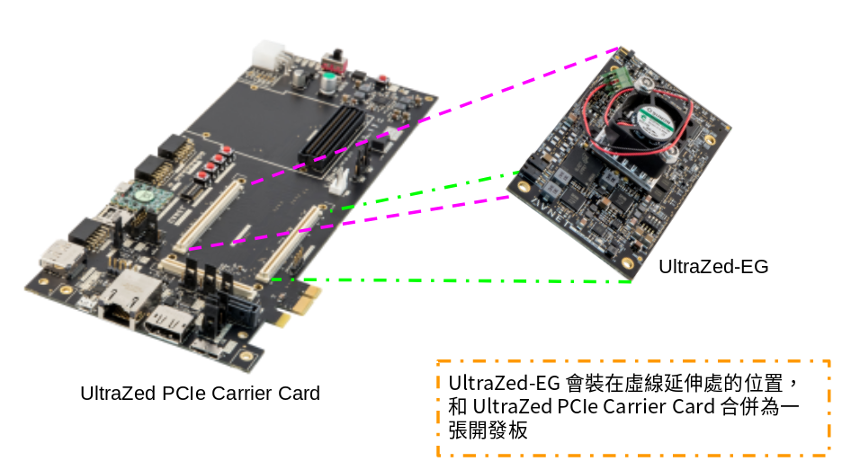
另外，要注意的是，核心板是可以被替換的，在我的文章中我使用的是 UltraZed-EG 。
UltraZed-EG
UltraZed-EG 是包含了 Xilinx FGPA 的核心板(System-On-Module, SOM)，中間的核心晶片為 Xilinx UltraScale+ MPSoC 系列的 Zynq UltraScale+ EG (XCZU3EG-SFVA625) ，這一系列不同版本的晶片差異如下:
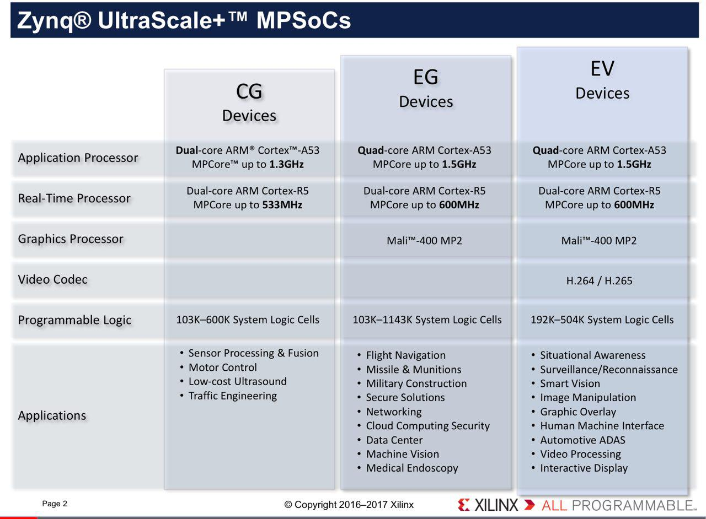
由於我的核心板是 UltraZed-EG，因此讓我們直接看這一款的方塊圖，好來理解其有哪些功能:
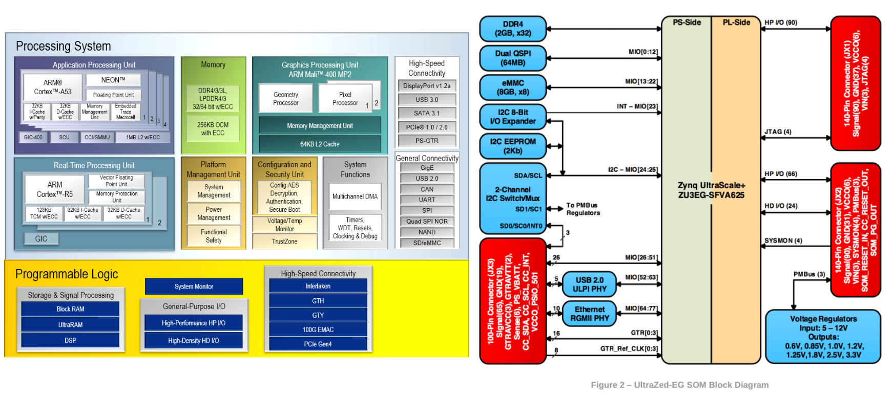
我們可以看到 Zynq UltraScale+ EG 除了具有 ARM Cortex-A53 可以用來跑複雜的作業系統 (比如 Linux), 搭配 Mali-400 GPU 同時也可以跑具有 3D 效果的程式。此外，這顆晶片還具有兩個 ARM Cortex-R5 可以讓你用來處理對反應時間有嚴格要求(Real-Time) 的工作。
那假設我們使用 Linux 或是 Android 的話，要怎樣讓 Cortex-A53 的 Linux/Andriod 與 Cortex-R5 的 RTOS 溝通呢？這個時候就可以使用 Xilinx 這幾年開源的 OpenAMP 框架來達到跨 CPU/OS 的通訊。
除了 ARM 的 CPU 外，因為這顆晶片同時也是 FPGA 晶片，當我們需要實做比如快速的影像處理、資訊偵測的時候，就可以透過採用 FGPA 進行我們的影像處理/分析等功能，再將資訊轉發給 Linux/Android 去做後續的資訊描繪。
簡單的來說，這一款具有 SoC 的 FPGA 可以達成非常多的產品需求 (不考慮成本的話啦^^)
由於核心板 (System-On-Module, SOM) 的任務就是把 SoC 的接腳拉出，讓開發者自行開發延伸板後將其合併就可以變成一個完整的產品，因此核心板本身有的週邊很少，在這邊我們只關注我們感興趣的週邊即可~
關於 UltraZed-EG, 可以透過 UltraZed-EG SOM Hardware User Guide 來更加了解其具有的功能。
SW2
首先，這塊核心板最重要的就是用來設定開機模式的 SW2 這個指撥開關。整塊板子的開機行為都會根據你的不同設定而改變，在後續文章裡面，我大部分都會選用 SD1/MMC33 這種透過 MicroSD 卡來進行開機的模式。
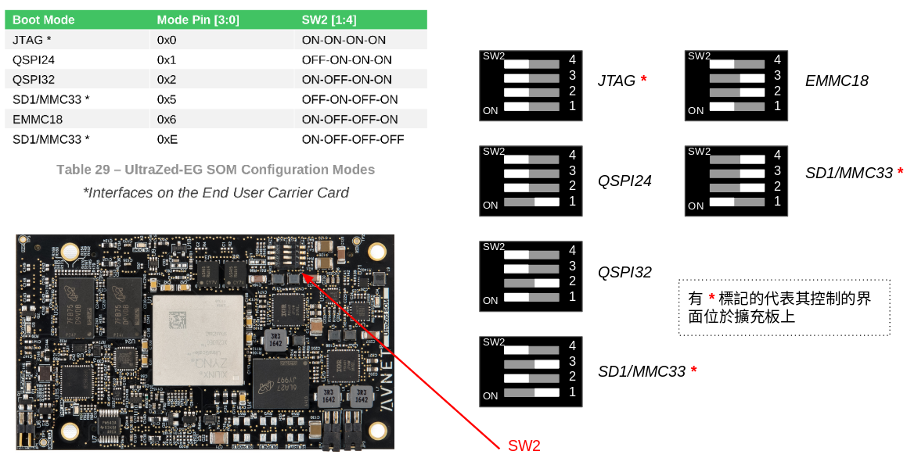
QSPI
核心板上有 2 顆 Micron QPSI MT25QU256ABAIEW7-0SIT NOR Flash, 不過我找不到相關的 datasheet….
我們可以透過 SPI 界面來將資料讀寫進這兩顆 NOR Flash 去。
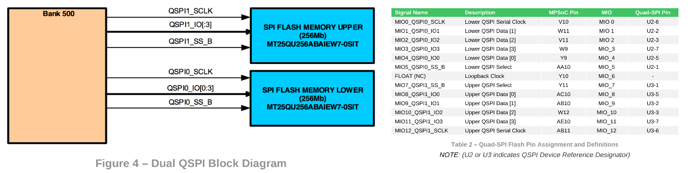
注意到如果你是要自己外接 SPI Flash 的話，也許最好看看 Micron Memory Support for Xilinx Platforms 的說明，裡面會標注可以用於 Xilinx 平台上的 Flash 的型號。
eMMC
核心板有一顆 Micron MTFC8GAKAJCN-4M IT eMMC 晶片，大小為 8GB，在預設的情況下這個 eMMC 會被當作是 SD0 ，而擴充板的 MicroSD 卡則是會被當作 SD1
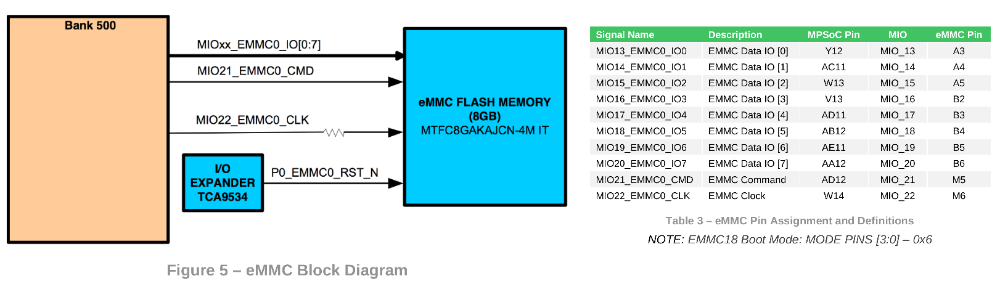
UltraZed-EG PCIe Carrier Card
本文使用的擴充板為 UltraZed PCIe Carrier Card, 為 AVNET 公司所出品的延伸板。由於 UltraZed-EG 本身只是將該 SoC 最基本的功能組裝在一起，實際上需要使用比如 USB、PCIe 等週邊的時候，就會需要透過延伸板來增加 I/O 的連接。
要了解這片板子，首先我們需要知道其 I/O 對應以及一些基本的週邊，因此最好是先從 UltraZed PCIe Carrier Card Hardware User Guide 來開始看起。
概觀
我們先從 UltraZed PCIe Carrier Card 的外觀來了解這片板子的大概功能，之後再透過電路等資訊來看要如何使用這片板子。
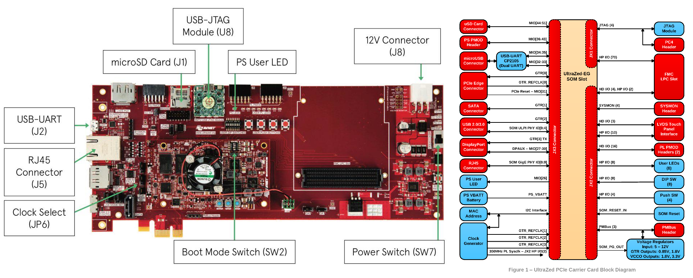
由於這塊板子的週邊可以區分為給 Cortex-A53 使用的部份 (Processing System, PS) 和給可程式邏輯區 (Programmable Logic, PL) 控制的兩個區塊，在搭配一些其他的週邊，因此我們可以用以下這張圖來看週邊的使用以及分佈。
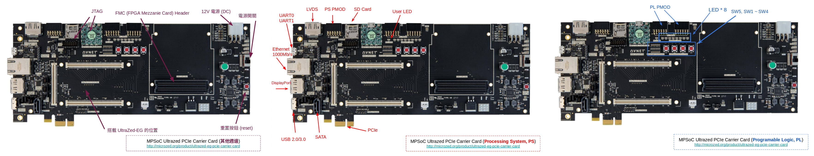
了解了基本的週邊後，就讓我們來一個一個看吧~
USB 2.0/3.0 (J4)
USB 位於 J4 的位置，為支援 USB 2.0/3.0 Host/Device 以及 OTG 的設備。我們可以透過調整 JP2, JP3 以及 JP5 來設定我們對這塊板子上的 USB 的使用需求。
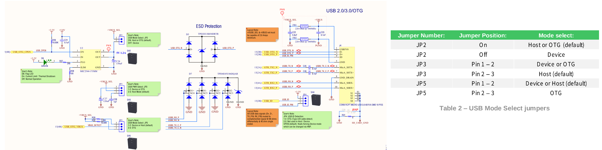
當設定 USB 為 OTG 的形式時，我們則可以透過修改 JP4 來指定 OTG 的運作模式
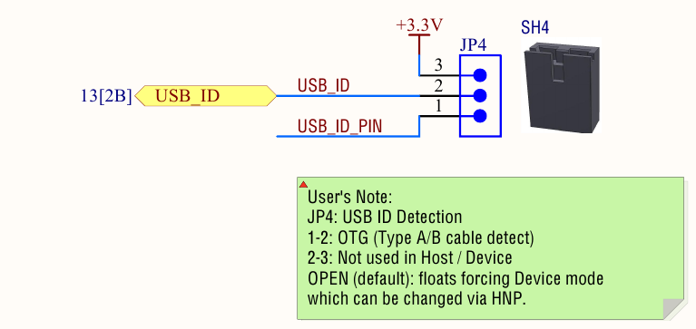
1000Mb/s 網路
由於 UltraZed-EG 已經做好了 MAC 和 PHY (DP83867) 的連線，因此 UltraZed PCIe Carrier Card 上的網路相關電路是直接將核心板的接線拉出，直接連線到 L829-1J1t-43G 這個 RJ45 連接器來用。
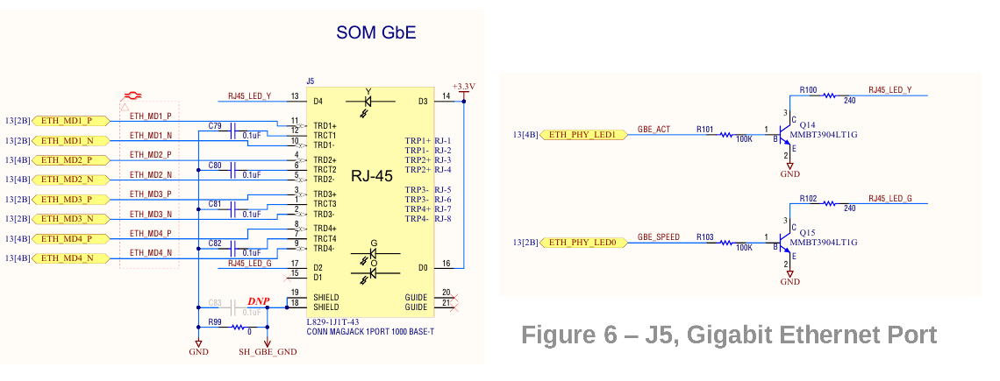
SATA3 Host
在 UltraZed PCIe Carrier Card 上有一個 SATA3 Host 界面連接到處理器系統(Processing Syste, PS)，我們可以在這邊接上外接硬碟擴充儲存空間，該界面傳輸速度最快可以到達 6 Gb/s。
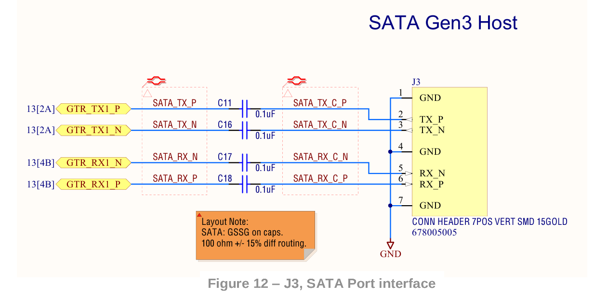
USB 轉 UART (J2)
位於 J2 的 micro USB 接頭，會經過 USB 轉 UART 晶片 CP2105 而變成兩個 UART 設備。
接到 Linux 上，會得到 /dev/ttyUSB0 和 /dev/ttyUSB1 兩個設備，預設都是從 /dev/ttyUSB1 輸出資訊。
這兩個 UART 對應到的 MIO (Multiplexed Input Output) 如下表所述：
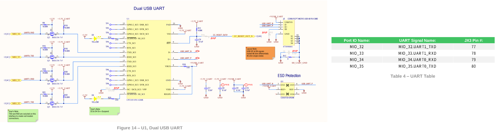
從上圖的 MIO 對應表可以發現到，之所以預設從 /dev/ttyUSB1 輸出，是因為這塊板子把 SoC 上的 ps_uart0 接到了 MIO_34 和 MIO_35 上，也因此實際上的 UART 對應表如下：
| MPSoC PS | MIO | Linux |
|---|---|---|
| ps_uart_0 | MIO_32 (TX), MIO_33 (RX) | /dev/ttyUSB1 |
| ps_uart_1 | MIO_35 (TX), MIO_34 (RX) | /dev/ttyUSB0 |
總之如果有透過 UART 輸出訊息，又奇怪怎樣都看不到的話，兩個 UART 都接收看看就對了 ^_^
MicroSD 卡座 (J1)
位於 J1 的 MicroSD 卡座提供了讓我們透過 SD 卡開機的用途，而附近的 JP1 短路的情況則是打開了 SD 卡的 write proteced 的功能。
注意到：當要透過 SD 卡開機的時候，別忘記修改主板上 SW2 的 DIP Switch
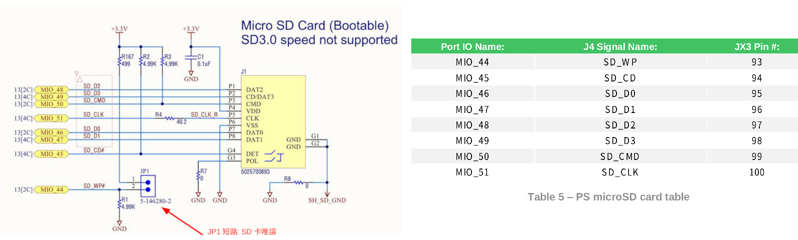
User LED D1
位於 D1 的 LED 是直接接到處理器系統 (Processing System, PS) 的 MIO26 上，這是這塊板子唯一一個使用者可以透過處理器系統(Processing System, PS)去控制的 LED。
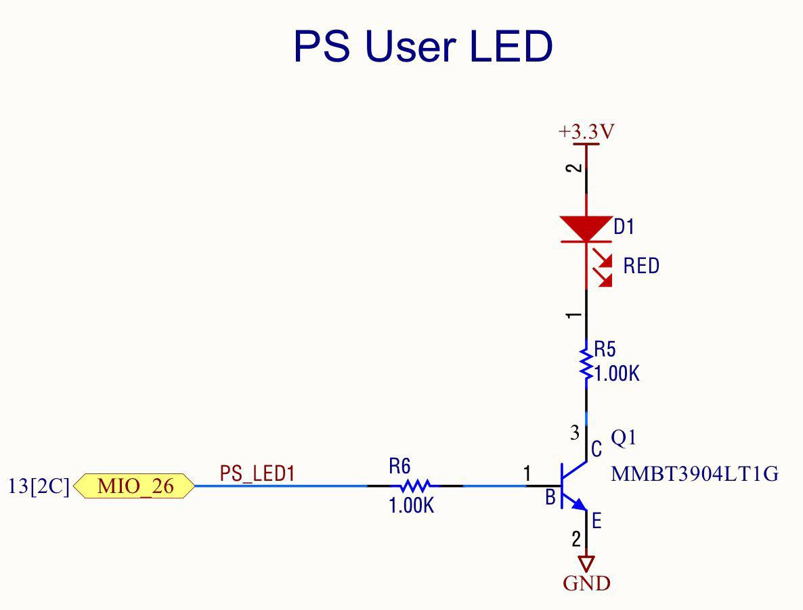
User LED D12 ~ D19
和 LED D1 不同，D12 ~ D19 的 LED 是位於可程式邏輯區(Programming Logic, PL)上，因此我們需要透過 AXI_GPIO 模組讓 Cortex-A53 能夠對其進行控制。
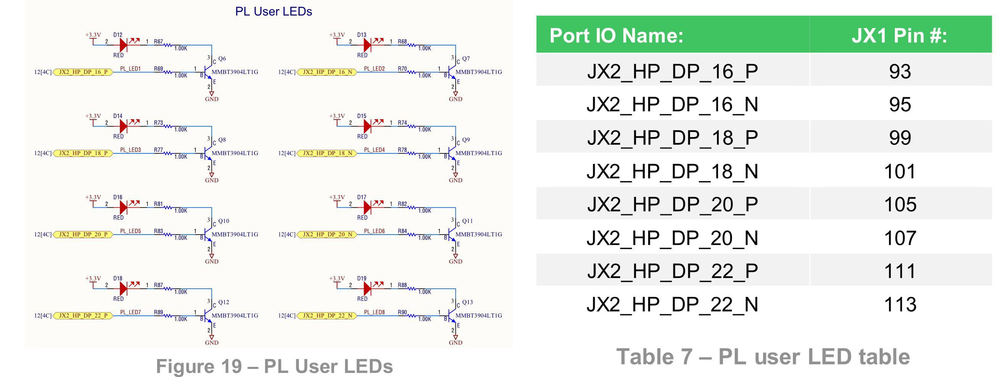
User Switch SW1 ~ SW5
除了 LED 外，這塊擴充板內建了 4 個無段按鈕 SW1 ~ SW4 以及一個 DIP Switch SW5 提供使用者輸入訊號使用，這幾個輸入源皆是接在可程式邏輯區 (Programming Logic, PL) 的位置，一般來說我們會透過 AXI_GPIO 模組讓 ARM Cortex-A53 可以使用這些輸入源。
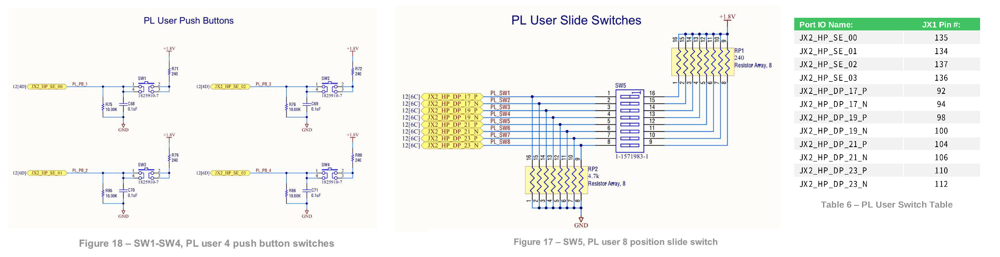
SOM Reset Input (SW6)
SW6 是用來重置 UltraZed-EG 用的無段按鈕，和電腦上使用的 Restart 按鈕功用一樣，都是在不完全斷電的情況下對 CPU 進行重置的動做。
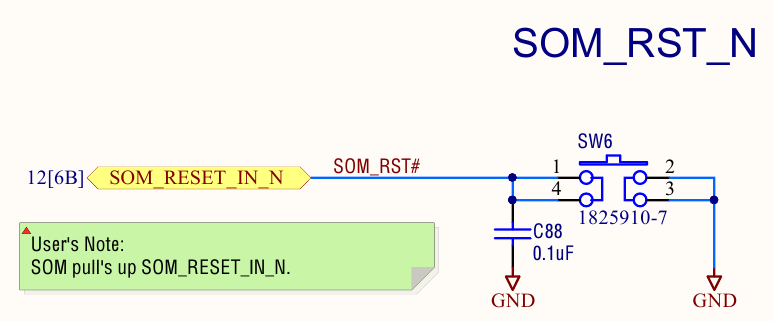
PS PMOD (JP5)
位於 JP5 位置的 PMOD 腳位是直接連接到 ZynqMP 的 MIO (Multiplexed Input Output) 腳位上的，因此這個 PMOD 是交由處理器系統 (Processing System, PS) 來進行控制。
由於 MIO (Multiplexed Input Output) 具有可切換的功能，因此這幾隻 MIO 可以根據用途變成 SPI、I2C、UART 等不同的接腳，詳細資訊請參考 ug1085 - Zynq UntraScale+ Device Technical Reference Manual 的 Chapter 28 對於 Multiplexed I/O 的說明。
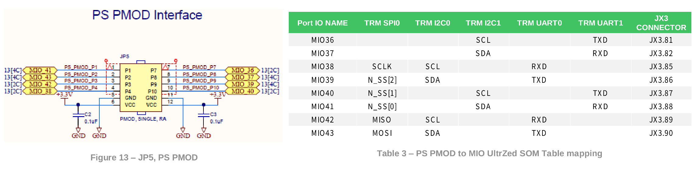
PL PMOD (JA, JB)
如果想要更有彈性一點的 I/O 的話，我們則可以透過 PMOD JA 和 JB 來對我們的輸入/出進行控制。
PMOD JA 和 JB 是連接在可程式邏輯區 (Programming Logic, PL) 上的，也意味著我們可以透過 Verilog 等硬體描述語言自訂我們自己的模組，然後在透過遮些 PMOD 的腳位進行輸出 (ex: 撰寫 UART 模組並將 TX/RX 從 PMOD 導出)
注意到這邊 I/O 的電壓準位為 3.3V ，如果要連接更低/高電壓的設備的話則需要做些保護才行。
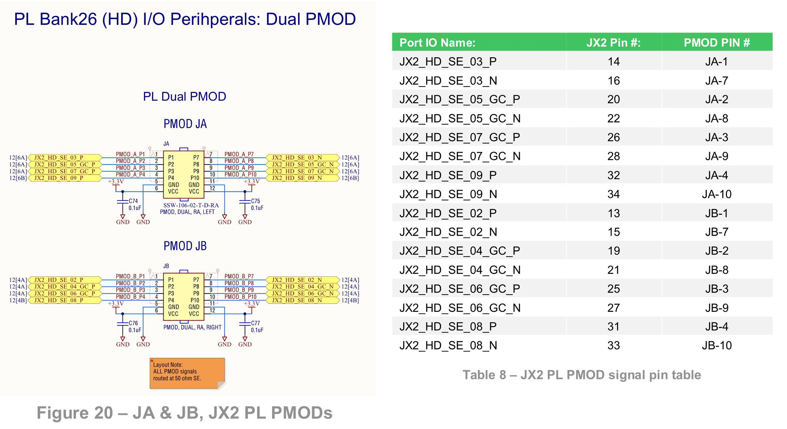
FMC Header JX1, 2 CON1A-E
這塊板子上有一個 FMC (FPGA Mezzanine Card) 界面，這是一種高速 I/O 界面，我們可以使用不同具有 FMC 界面的擴充板繼續擴充這塊板子的功能。
(有點類似 Altera DE2-115 上的 High Speed Mezzannie Card, HSMC 接口)
由於我並未有任何 FMC 界面的擴充板，因此這邊就不對其做多餘的介紹，只需要知道這個界面可以把一些 UltraZed-EG 並未用於這塊擴充板的腳位拉出，因此我們可以再接上別的擴充板繼續擴充。
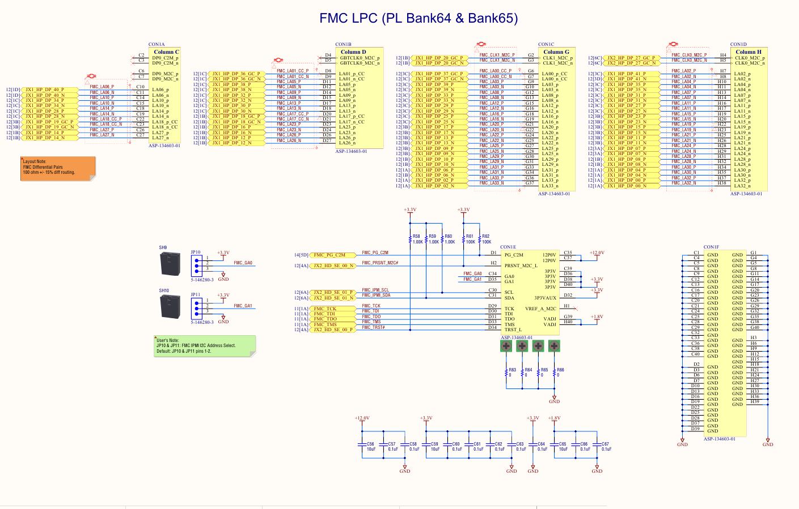
Clock Generator (U5)
位於 U5 的 IC 為 IDT 5P49V5935B521LTGI ，是一個時脈產生器。該晶片透過 I2C 界面連接到處理器系統 (Processing System, PS)，其中 I2C 位址為
0xD4 。
在這塊板子上，此晶片主要用途是產生 LVDS (Low-voltage differential signaling) 界面所需要的時脈，由於我沒有 LVDS 面板可以用，因此這邊也就只好先略過。
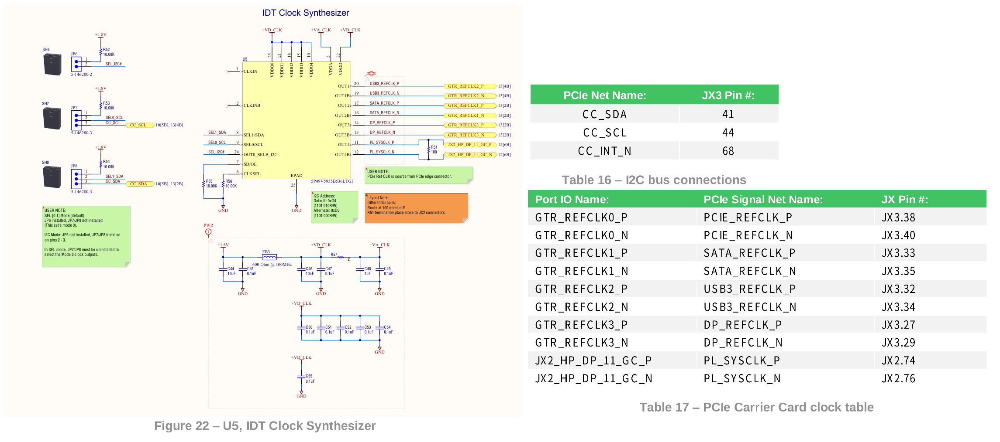
如果需要調整輸出的時脈，則可以透過 JP6, JP7 和 JP8 進行調整，具體請見 UltraZed PCIe Carrier Card Hardware User Guide.pdf
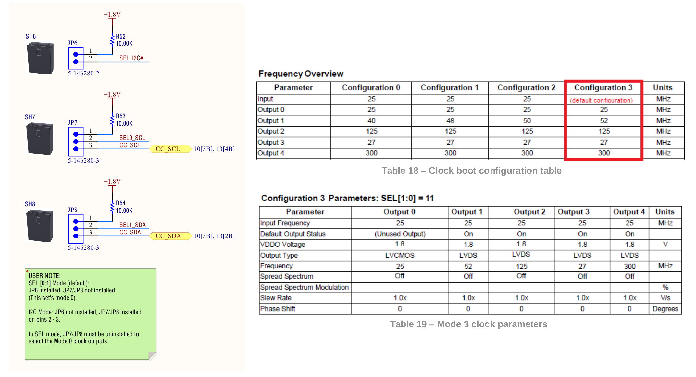
EEPROM (U6)
位於 U6 的 IC 則是 Microchip 24AA025E48T-I/OTCT-ND ，這是一顆具有 2kbit (256 bytes) 大小的 EEPROM，一樣是透過 I2C 界面和處理器系統(Processing System, PS) 連接，其 I2C 位址為 0xA2 。
這顆 EEPROM 預設的設定是用來存取網路需要使用到的 MAC Address, 但是由於空間足夠，因此我們也可以將一些設定放置到這個 EEPROM 去。
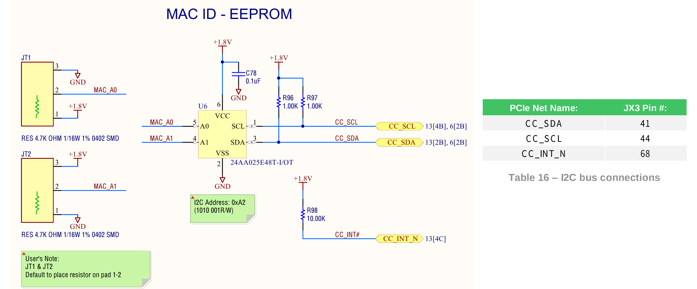
JTAG Debug Interfaces
這塊板子具有兩個 JTAG 界面，一個是透過 USB，另外一個則是傳統的 JTAG 接腳 (14p 牛頭母座)
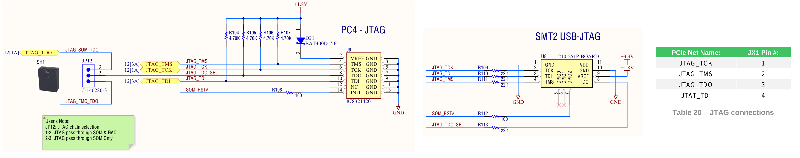
我們可以透過 JP12 來選擇當前的 JTAG 燒錄模式，看是要對 SOM (UltraZed-EG 核心板) 使用，還是對 SOM 以及 FMC 界面使用。
預設為 JP12 的腳位 2-3 短路，這種情況下 JTAG 只會針對 SOM 進行運作。
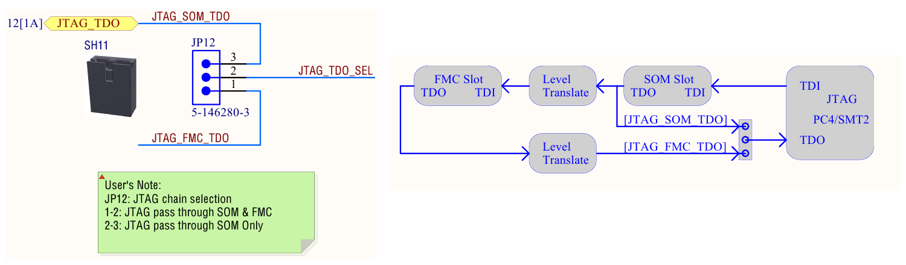
Display Port (P2)
UltraZed PCIe Carrier Card 雖然沒有 HDMI 或是 VGA 可以輸出畫面，作為替代的則是加入了 DisplayPort 來作為圖形顯示的輸出，我們可以將其接到支援 DisplayPort 輸入的螢幕上來進行畫面的顯示，或是購買 DP 轉 VGA 的線材來透過 VGA 將影像輸出。
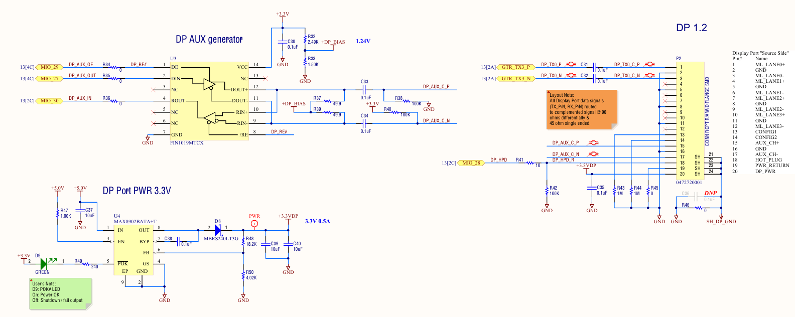
注意到如果使用 DP 轉 HDMI 的線材可能會因為 AR# 67462 的關係，無法透過 HDMI 將畫面順利顯示出來，因此建議還是購買 DP 轉 VGA 的線材比較好。
(我在這塊板子測試 DP 轉 HDMI 沒有畫面顯示 Orz…)
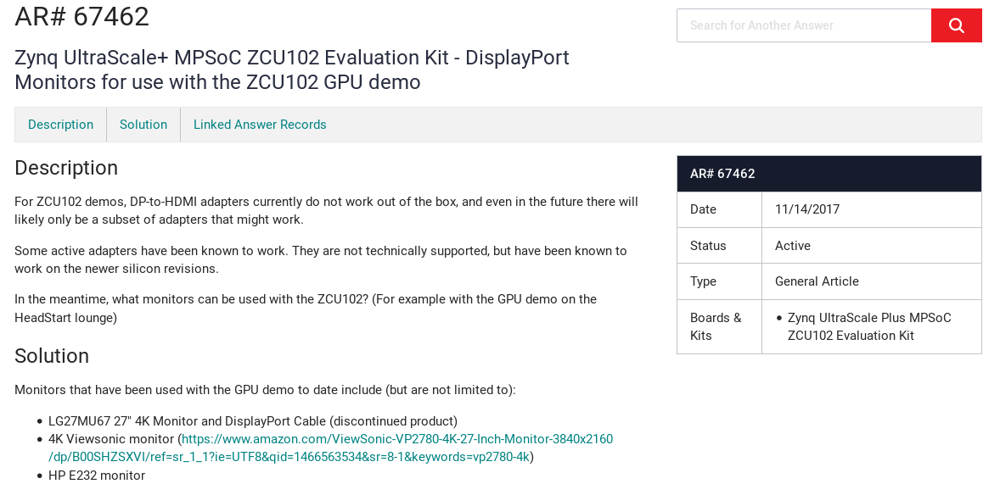
PCIe Edge Connector (P1)
位於 P1 的 PCIe 接腳就是這塊板子為何會冠以 PCIe 之名的理由。這個 PCIe 界面連接到了處理器系統 (Processing System, PS) 上的 GTR transceiver，這是一個可以支援速度高達 6.0Gb/s 的高速傳輸界面，並可以支援 PCIe, SATA, USB 3.0, SGMII 和 DisplayPort 等訊號傳輸。
在這邊我們使用到的是 GTR[0] ，並將其定義成 PCIe Gen2 的界面, 因此速度會調整成 5.0Gb/s。
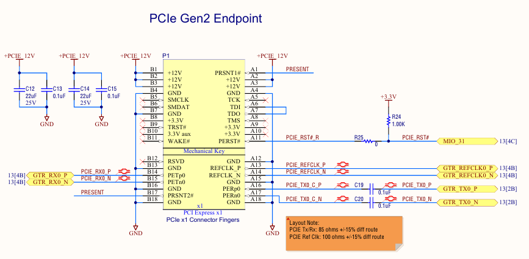
LVDS Touch Panel Interface (P3)
延伸閱讀
- DS890: UltraScale Architecture and Product Data Sheet: Overview.pdf
- Avnet UltraZed-EG SOM Designer's Guide.pdf
- Xilinx ZYNQ UltraSCALE+ MPSoC
- Working with the UltraZed SoM & PCIe Carrier Card
- UltraZed-EG SOM Hardware User Guide.pdf
- UltraZed PCIe Carrier Card Hardware User Guide.pdf
- ug1085: Zynq UntraScale+ Device Technical Reference Manual.pdf
- AR# 65463: Zynq UltraScale+ MPSoC - What devices are supported for configuration?
- FPGAとその周辺の電源についての動畫でのサポート